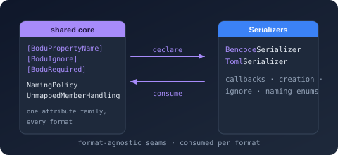

Bodu.Text.Serialization
Bodu.Text.Serialization is the shared, format-agnostic core that every Bodu text serializer builds on. It contains no parser and no writer — only the vocabulary a model declares once and every serializer honors: the attribute family, the naming policies, the ignore / object-creation / unmapped-member enums, and the four serialization-callback interfaces. Six packages reference it — the three System.Text.Json-shaped serializers, Bodu.Text.Bencode, Bodu.Text.Toml, and Bodu.Text.Yaml, and the three line formats, Bodu.Text.Delimited, Bodu.Text.DotEnv, and Bodu.Text.Ini.
Part of the Text & Serialization topic.
Why a separate package
A model annotated with [PropertyName], [Ignore], or [Required] is making a statement about its wire shape, not about any one format. Keeping those declarations in a package that depends only on Bodu.Core means:
- Annotate once, serialize anywhere. The same DTO round-trips through
TomlSerializer,YamlSerializer,BencodeSerializer,IniSerializer,DotEnvSerializer, orDelimitedSerializerwith no per-format attributes. - Model libraries stay format-free. A project that only declares DTOs references
Bodu.Text.Serializationalone; the application that chooses TOML today and YAML tomorrow references the format package. The model assembly never takes a dependency on a reader or writer it does not use. - One precedence story. Member attribute beats type attribute beats options — the same rule in every serializer, documented once in Core concepts.
The attribute family
Every attribute derives from the abstract SerializationAttribute, so the family can be discovered as a unit. All live in the Bodu.Text.Serialization namespace; add using Bodu.Text.Serialization; to the model file.
| Attribute | Applies to | Effect |
|---|---|---|
| PropertyNameAttribute | property, field | Pins the wire key for one member, overriding the CLR name and any naming policy. |
| IgnoreAttribute | property, field | Excludes the member — unconditionally (Condition defaults to Always) or only when writing null / the default value. |
| IncludeAttribute | property, field | Forces a member in: binds non-public accessors ({ get; private set; }, { get; init; }) and surfaces a public field even when IncludeFields is off. |
| PropertyOrderAttribute | property, field | Sets the relative order in which members are presented to the writer (ascending; unannotated members are 0 and keep declaration order). |
| RequiredAttribute | property, field | Fails deserialization when the key is absent — the same effect as the C# required keyword. |
| ConverterAttribute | property, field, class, struct, enum | Names the converter type for a member (governs that member) or a type (governs every use). |
| ExtensionDataAttribute | property, field | Marks the one dictionary-shaped member that captures keys mapping to no other member, and writes them back out. |
| ConstructorAttribute | constructor | Selects the constructor used during deserialization when a type declares more than one. |
| NamingPolicyAttribute | class, struct, interface | Applies one of the built-in policies to the annotated type's members, overriding the options-level policy. |
| UnmappedMemberHandlingAttribute | class, struct, interface | Chooses, per type, whether an unknown key is skipped or rejected. |
| ObjectCreationHandlingAttribute | class, struct, interface, property, field | Chooses whether a collection member is replaced with a new instance or populated in place. |
| StringEnumMemberNameAttribute | enum field | Sets the string written for one enumeration member when the enum is serialized by name. |
Naming policies
NamingPolicy is the abstract base with a single ConvertName(string) method and five ready-made singletons: CamelCase, SnakeCaseLower, SnakeCaseUpper, KebabCaseLower, and KebabCaseUpper. Assign one to a serializer's PropertyNamingPolicy option, or select it declaratively on a type through [NamingPolicy(KnownNamingPolicy.…)] — the KnownNamingPolicy enum names each singleton (plus Unspecified). Subclass NamingPolicy for a convention of your own.
NamingPolicy.SnakeCaseUpper.ConvertName("MaxRetryCount"); // "MAX_RETRY_COUNT"
NamingPolicy.KebabCaseLower.ConvertName("HTTPServerPort"); // "http-server-port"
The separator policies split at a lowercase-to-uppercase boundary and at the end of an acronym, so HTTPServer becomes http_server, not h_t_t_p_server. CamelCase lowercases only the first character.
Behavior enums
| Enum | Values | Read through |
|---|---|---|
| IgnoreCondition | Never, Always, WhenWritingDefault, WhenWritingNull |
[Ignore(Condition = …)] on a member, or the options-level DefaultIgnoreCondition. |
| ObjectCreationHandling | Replace, Populate |
[ObjectCreationHandling(…)] on a member or type, or the options-level PreferredObjectCreationHandling. |
| UnmappedMemberHandling | Skip, Disallow |
[UnmappedMemberHandling(…)] on a type, or the options-level UnmappedMemberHandling. |
There is deliberately no number-handling enum in this package: how a numeric scalar is written is a per-format decision (YAML, for example, has its own YamlNumberHandling option), and the line formats carry every value as text.
Serialization callbacks
Four interfaces give a type a hook at each edge of the mapping pipeline: IOnSerializing (before members are written), IOnSerialized (after), IOnDeserializing (after construction, before members are assigned), and IOnDeserialized (after every member is assigned — the natural place for cross-member validation). Each has one parameterless void method; implement them explicitly to keep the hooks off the type's public surface. The exact position of each hook is tabulated in Core concepts.
Who uses what
The package is consumed in two distinct ways, and knowing which one your serializer takes explains which attributes it honors.
| Feature | Bencode · TOML · YAML | Delimited · DotEnv · INI |
|---|---|---|
[PropertyName], [Ignore], [PropertyOrder] |
yes | yes (Delimited honors [Ignore] unconditionally; DotEnv and INI also honor the conditional forms and DefaultIgnoreCondition) |
[Required] / C# required |
yes | DotEnv and INI ([Required]); not Delimited |
Options-level PropertyNamingPolicy, PropertyNameCaseInsensitive, IncludeFields |
yes | yes |
Type-level [NamingPolicy] |
yes | no |
[Include], [Constructor], [ExtensionData], [UnmappedMemberHandling], [ObjectCreationHandling] |
yes | no |
[Converter], custom converters, [StringEnumMemberName] |
yes | no — scalars are strings converted with the invariant culture |
| The four callback interfaces | yes | yes |
The structured serializers (Bencode, TOML, YAML) compile the recursive converter engine — the metadata resolver, the object / collection / dictionary / nullable / enum converter factories, and the options-resolution partial — from this package's shared/** source tree under a per-format symbol. That engine is what reads the full attribute family, selects constructors, captures extension data, and resolves converters. The line formats reference only the compiled assembly: their wire is string-only, so each ships a small serializer-local binder that reads the attributes and naming policy and converts scalars with InvariantCulture — there is no converter pipeline to plug into.
Headline types
| Type | Purpose |
|---|---|
| SerializationAttribute | Abstract base of the whole attribute family. |
| PropertyNameAttribute / IgnoreAttribute / RequiredAttribute / PropertyOrderAttribute | The member-shaping attributes every serializer honors. |
| NamingPolicy / KnownNamingPolicy / NamingPolicyAttribute | Wire-name conventions: the policy base and singletons, the enum that names them, and the type-level selector. |
| IgnoreCondition / ObjectCreationHandling / UnmappedMemberHandling | The behavior enums shared by the attributes and the per-format options. |
| IOnSerializing / IOnSerialized / IOnDeserializing / IOnDeserialized | The lifecycle callbacks. |
| ConverterAttribute / ConstructorAttribute / ExtensionDataAttribute / IncludeAttribute | The structural attributes read by the recursive engine. |
Where to go next
- Core concepts — precedence, naming-policy order, required members and constructor binding, extension data, callbacks, options freezing, converter resolution.
- Getting started — install, one DTO serialized by two serializers, a callback, a naming policy.
- Bodu serializers introduction — the three structured serializers that compile the shared engine.
- Line formats introduction — the three string-wire formats that reference this package.
- Per-format attribute guides — TOML, Bencode, YAML.
- API reference — Bodu.Text.Serialization.